用自由軟體 Plone 來架設網站 (5)－元件架構

在前篇文章裡，我們模擬一個小型專案的需求，利用 Paste 的 paster 工具，在 src 目錄裡建立骨架程式碼，新增一個 mysite.eventfolder 的 Archetypes 模組專案，執行 paster addcontent contenttype 之類的指令後，則可以新增型別裡的欄位資訊，熟練的話，數分鐘之內就可以搞定內容型別的雛型。為了知行合一，我們將逐步探究程式碼的細節，了解它們的原理跟修改方法。
Plone 系統為了納入這個新模組，會在 src/mysite.eventfolder 檔案系統裡，依序存取數個檔案。首先，GenericSetup 會讀取 mysite/eventfolder/configure.zcml 的內容，註冊 extension profile，接著讀取 interface 和 content 目錄裡的資訊，做為建立型別的依據。究竟，什麼是 interface 呢？它又扮演怎樣的角色呢？
元件架構
如何讓系統具備擴充彈性，同時保持高的安全性，還有低的升級門檻，一直是件挑戰。為了更接近這個聖杯，當年的開發人員，將 Zope2 學到的經驗，轉化成 Zope3 的設計理念，具體的方法論稱為 Zope Component Architecture (ZCA)，實作 ZCA 的模組被稱為 Zope Toolkit (ZTK)，這些方法跟核心模組，也成為目前 Plone 的技術基礎。
Component Architecture 通常被譯為「元件架構」，主要概念是將軟體依其架構與功能，分為多個獨立元件，諸如：Java、.Net、Mozilla XPCOM 都是廣為人知的元件架構。就元件架構而言，ZCA 既不是首創，也不是獨創，它是 Python 軟體的開發架構，適合用來開發大型系統，加上它不限於網頁應用程式的領域，稱之是 Python Component Architecture 並不為過。
Python 的軟體世界是一堆物件，ZCA 則是一套架構方法，讓這些物件有效組建和再利用，ZCA 引入一個稱為「元件」(component) 的概念，元件本質仍是 Python 物件，它額外加了「介面」(interface) 物件，用來描述元件的特性和行為，像是抽象的 API。不過，想要知道元件如何做到這些特性及行為的話，必須另外查看實作的程式碼。
元件介面
以 Event Folder 為例，它的介面檔案是 interfaces.py 或位於 interfaces 目錄裡，以 class IEventFolder(Interface) 形式來定義。介面的定義方式跟傳統的 Python 物件定義方式很像，不過，ZCA 只是借用（有人會視為誤用）class 語法，介面的定義細節仍然有其獨特之處，留意不要跟 Python 物件的定義方式混淆，如圖1 所示。
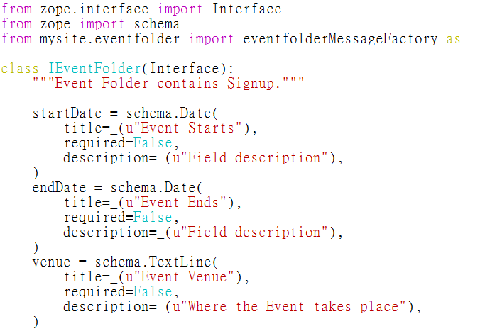
▲ 圖1 Event Folder 的介面內容範例
IEventFolder 是介面的名稱，最前面的 I 代表 interface 之意，在最前面使用 I 符號是種慣例。IEventFolder() 裡接的 Interface，來自於 zope.interface 的定義，zope.interface 是 ZCA 的核心實作之一，也就是 Zope Toolkit 的模組產品。
在 IEventFolder(Interface) 之下，我們看到 startDate 和 venue 兩個欄位屬性值範例，載入 zope.schema 後，它們分別使用 schema.Date() 和 schema.TextLine() 的形式來定義，而且提供 title 和 description 之類的設定值。
不過，一般的介面內容，包括屬性值和方法兩種定義，同時也不需要載入 zope.schema。接著，我們先利用獨立的篇幅，說明介面的定義與實作宣告方式。
介面的定義與操作
利用 bin/zopepy 工具，可以練習建立介面定義，如圖2 所示。範例裡的介面定義了 startDate 屬性值，還有 countSignup 方法，特別注意到 startDate 不需要宣告型別或起始值，countSignup 也不需要 self 參數，這些正是和 Python 物件定義不同的地方。
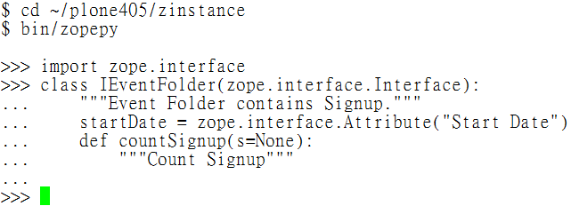
▲ 圖2 屬性值和方法的定義範例
介面仿照一般物件的行為，因此可以沿用許多操作方法，包括 __doc__ 查詢文件字串等，如圖3 所示。
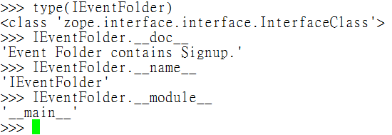
▲ 圖3 介面物件的操作範例
但是，想要存取介面的屬性值，不能直接使用 IEventFolder.startDate 的形式，會造成 AttributeError 的錯誤，這也是和 Python 物件不同的地方，如圖4 所示。
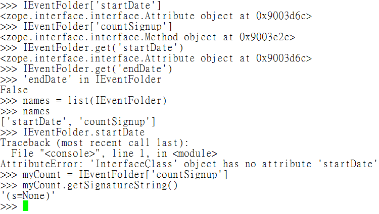
▲ 圖4 介面屬性值的存取範例
有了介面之後，ZCA 讓 interface-class-object 三者之間產生新的關係，也就是說，object 是 class 的 instance，class 實作 interface 的細節，ZCA 並利用 provide 和 implement 這兩個技術動詞，來描述它們的相互關係，例如：object 有 provide 某個 interface，class 有 implement 某個 interface，而且一個 object 能 provide 數個 interface，一個 class 能 implement 數個 interface，甚至 class 沒有 implement 的 interface，它的 object 也可以直接 provide 這個 interface。
宣告介面的實作
請留意，介面的定義值並不是 class 實作的內容，而是 class 實作的契約內容，同時，它也侷限屬性值的範圍，並搭配預設的驗證方法。當介面完成定義後，如果有 class 宣告要實作這個介面，測試階段的程式碼已經可以執行，而不需要等到 class 真的把實作細節完成。
那麼，class 該如何宣告要實作一個介面呢？它必須從 zope.interface 載入 implements 函式，在 class 裡執行 implements(IEventFolder) 之類的指令，如圖5 所示。
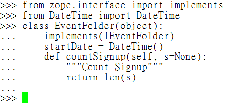
▲ 圖5 宣告介面實作的範例
由於 EventFolder 類別有 implement 介面 IEventFolder，EventFolder 類別的 instance 就會 provide 介面 IEventFolder，而且在類別定義裡看得到相關的實作細節。以上是實作一個介面的例子，實作多個介面時，可使用 implements(IEventFolder, IOtherInterface) 之類的語法，也就是用逗號隔開即可。
值得一提的是，宣告介面實作的動作，也可以在類別定義之外指定，也就是事後使用圖6 所示的語法範例來動態指定。
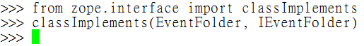
▲ 圖6 動態宣告介面實作的範例
Archetypes 的實作
以 Archetypes 的實作為例，它的具體內容同樣是一段 class 程式碼，位於 content 目錄裡，比對 content/eventfolder.py 和圖1 裡的 interfaces/eventfolder.py 內容，你會發現兩者有對應關係，如圖7 所示。
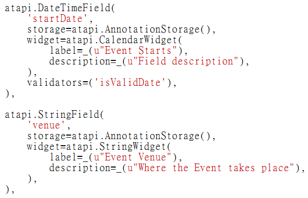
▲ 圖7 Event Folder 的欄位實作範例
不過 Archetypes 實作的程式碼，並不會參照介面的定義。也就是說，即使 class IEventFolder(Interface) 底下是空空如也，並不會影響 Archetypes 的實作。另外，完全沒有屬性值的介面檔案，是最簡化的形式，又被稱為 marker interface，如圖8 所示。
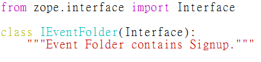
▲ 圖8 marker interface 的範例內容
另外，也可以使用 providedBy() 來查詢某個物件是否 provide 某個介面，或是用 implementedBy() 來查詢某個類別 implement 哪些介面，如圖9 所示。
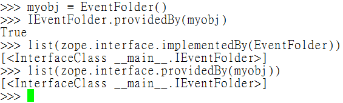
▲ 圖9 查詢物件類別介面三者的關係
型別的編輯與顯示
存取介面資訊後，Archetypes 會讀取 content 目錄裡的資訊，首先是 content/configure.zcml 檔案，內容包括型別的 class 定義檔位置，介面檔位置，還有權限資訊，如圖10 所示。
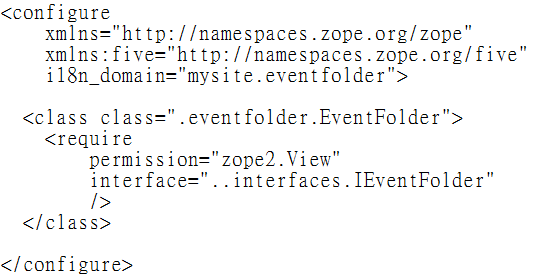
▲ 圖10 content 目錄的 configure.zcml 範例
在 content/eventfolder.py 檔案裡，除了 field 和 widget 的 EventFolderSchema 定義細節外，關鍵內容就是 class EventFolder(folder.ATFolder) 的定義，還有 implements(IEventFolder) 的宣告，如圖11 所示。
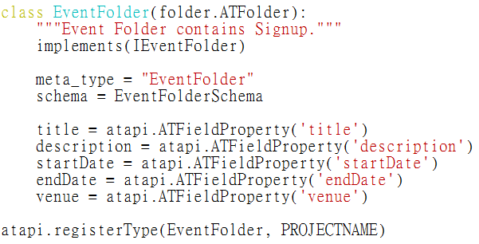
▲ 圖11 content 目錄的 eventfolder.py 範例
使用預設的顯示方式，畫面如圖12 所示。
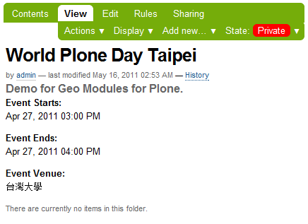
▲ 圖12 型別的顯示範例
接著，利用 paster 建立 Signup 型別，我們將 global_allow 選項設定為 False，如圖13 所示。
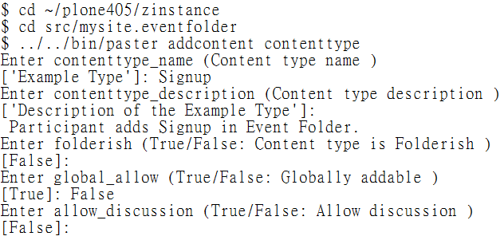
▲ 圖13 建立 Signup 型別
再用 paster addcontent atschema 分別建立 name 和 email 兩個欄位，用來記錄活動報名者的基本資料。Signup 型別的程式內容會儲存在 content/signup.py 檔案，部份的程式碼範例如圖14 所示。
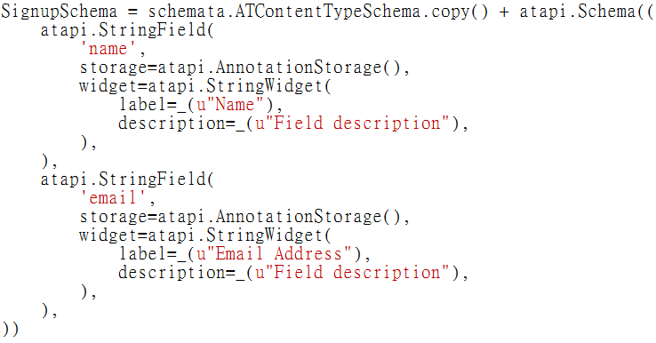
▲ 圖14 Signup 的 Schema 範例
為了讓 Signup 型別能夠在 EventFolder 裡被新增，我們要確認 mysite/eventfolder/profiles/default/types/Event_Folder.xml 檔案裡，將 allowed_content_types 的屬性值，加入 Signup 的設定值，如圖15 所示。
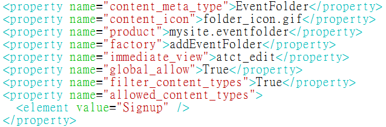
▲ 圖15 Event_Folder.xml 的 allowed_content_types 設定範例
順利的話，從 Event Folder 的項目，在新增項目的下拉選單裡，會看到 Signup 的型別，如圖16 所示。如果沒有看到 Signup 的話，需要重新啟動 Plone，再到 Site Setup 的 Add-on 重新啟用，也就是先停用再啟用 Event Folder 模組。
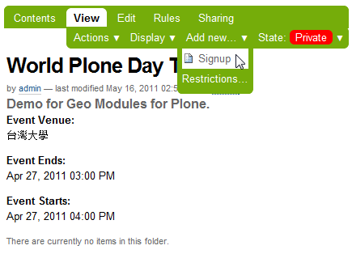
▲ 圖16 Event Folder 裡新增 Signup 的畫面
修改標題欄位
Archetypes 預設繼承的型別，通常都會有 title 和 description 兩個欄位，如圖17 所示。但這兩個欄位對 Signup 型別而言，並沒有用處，我們需要進行欄位的調整。
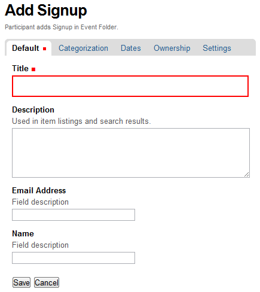
▲ 圖17 Signup 型別的欄位顯示範例
最簡單的修改方式，是將 title 改用 name 的名稱文字，再將 description 隱藏，調整後的結果，如圖18 所示。
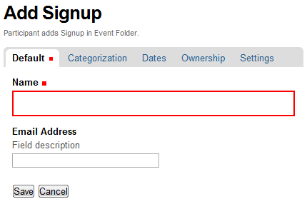
▲ 圖18 Signup 型別欄位調整後的範例
主要的程式碼修改結果，如圖19 所示。由於 name 和 title 都是使用 StringField 和 StringWidget，直接修改 title 的 widget label 屬性值，就可以滿足我們的需求，另外 description 的 widget，有個 visible 屬性值，設定為 {"edit": "invisible", "view": "invisible"} 之後，編輯或顯示型別內容時，就看不到 description 欄位了。
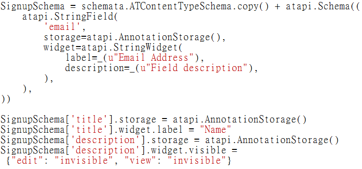
▲ 圖19 Signup 型別的 Schema 修改範例
結論
廣義地看，ZCA 只是個方法論，它不必然優於 Model-View-Controller (MVC) 架構方式，它們都試圖向開發人員推銷一套解題邏輯，有著各自的成本門檻，或是專擅與不足之處，開發人員可以依照自己的需要，使用合適的架構方式或工具。
目前 ZCA 逐漸開枝散葉，成為幾個新興網站開發架構的基礎，例如 Grok 和 Pyramid 都採用 ZCA 的實作工具，並致力降低上手的門檻，讓開發人員更容易地發揮元件架構帶來的優勢。
藉由深究 Archetypes 自製型別的過程，我們認識了 ZCA 的基本原理，它是 Plone 系統維持擴展彈性的重要基石，舉例來說，interface 不僅用於型別的定義，也用於動態網頁的顯示技巧上。舊式的 Plone 動態網頁顯示方式，是搭配 portal_skins 工具，很容易造成不同 Plone Site 或模組之間的相互干擾。在後續的內容裡，我們將介紹動態網頁的相關技巧。
您也許有興趣閱讀以下文章:
- 用自由軟體 Plone 來架設網站(10)－連接資料庫 - 2011-08-05
- 用自由軟體 Plone 來架設網站(9)－多媒體結合 - 2011-07-25
- 用自由軟體 Plone 來架設網站(8)－內容查詢 - 2011-07-12
- 用自由軟體 Plone 來架設網站(7)－版型調整 - 2011-06-28
- 用自由軟體 Plone 來架設網站 (6)－動態網頁 - 2011-06-09
- 用自由軟體 Plone 來架設網站 (4)－建立專案 - 2011-05-04
- 用自由軟體 Plone 來架設網站 (3)— 內部設定 - 2011-04-25
- 用自由軟體 Plone 來架設網站 (2)— 內容管理 - 2011-04-11
- 用自由軟體 Plone 來架設網站 (1)— 基礎安裝 - 2011-03-21